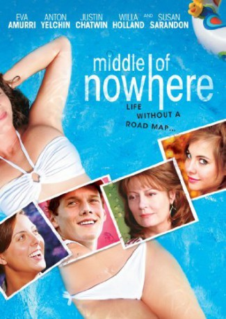

#8474 Ein Platz im Leben
Alternativ: Middle of Nowhere
 
 IMDB-Wertung: 6.5 / 10
IMDB-Wertung: 6.5 / 10  Metascore: 0
Metascore: 0 
Summer in a small southern town: Grace wants to go to college, but her feckless mom has poisoned that well (no student loans because mom has welshed on credit cards in Grace's name). Dorian wants to escape from his snobbish adoptive parents. They team up to sell marijuana - she hopes for enough to go to college. Both investigate family secrets, and things get complicated when Dorian falls for her, Grace falls for someone else, and Grace's 15-year-old sister behaves badly. Can Dorian find independence and Grace get to college? And what constitutes a family, anyway?
Jahr: 2008
Dauer: 95 Minuten
FSK: 12
Land: USA Studio: Image EntertainmentTonspuren: DTS - ,
Untertitel: Deutsch,
Auflösung: 1080p (1920x1040) Größe: 11878 MB
Genre: Drama, Komödie, Liebe
Regisseur:  John Stockwell
John Stockwell
Drehbuch: Michelle Morgan
Soundtrack: Ferraby Lionheart
Darsteller:
 Eva Amurri Martino als Grace Berry
Eva Amurri Martino als Grace Berry Anton Yelchin als Dorian Spitz
Anton Yelchin als Dorian Spitz- Willa Holland als Taylor Elizabeth Berry
 Susan Sarandon als Rhonda Berry
Susan Sarandon als Rhonda Berry Justin Chatwin als Ben Pretzler
Justin Chatwin als Ben Pretzler- Brea Grant als Jean
- Kenny Bordes als Ryan
 Scott A. Martin als Morris Kraven
Scott A. Martin als Morris Kraven- Aimée Spring Fortier als Bonnie
- Marie Debrey als Paulette Spitz
- Veronica Berry als Vik
 Andrea Frankle als Jessica Luther
Andrea Frankle als Jessica Luther- Keith Pratt als Joe
 Bill Martin Williams als David Chester Spitz
Bill Martin Williams als David Chester Spitz Kyle Clements als Ted Jorgenson
Kyle Clements als Ted Jorgenson Hugo Perez als Kadija Ahmed
Hugo Perez als Kadija Ahmed Jerry Leggio als Judge
Jerry Leggio als Judge- William Haze als Bob Berry
 Jeannetta Arnette als Mindy Green
Jeannetta Arnette als Mindy Green- Kennon Kepper als Kid with Attitude
- Brooke Frost als Party Guest (uncredited)
 Michael Wozniak als Golfer (uncredited)
Michael Wozniak als Golfer (uncredited)- Anny Ibarra als Elena
- Lindsay Soileau als Cami
- Jessica Heap als Justine Spitz
- Paul Lockett als Gate Security Guard
- Neal Rivet als Seth Schrader
- Jacqueline Novak als Melanie
- Karen Bramen als Aunt Polly
- Sharon K. London als Ms. Bryant
- Randy Maggiore als Dick Jones
- Daurice Cummings als Water Park Patron (uncredited)
- Dawn Himel als Housewife (uncredited)
- Jaci LeJeune als Party Girl (uncredited)
- Allison Moss als Bikini Girl (uncredited)
- David Pitt als Guest (uncredited)
- Yalonda Lisa Reeves als Party Guest / Park Visitor (uncredited)
- Cassidy Smith als Water Slide Racer (uncredited)
- Dawna Williams als Water Park Patron (uncredited)
Datei: X:\2008(N-Z)\Platz im Leben, Ein (2008, FSK12, 1920x1040).mkv seit 07.03.2018
Festplatte: HD 2008(G-Z)-2009(A-F)
 Es gibt insgesamt 91 Filme in der Gruppe '2008(N-Z)'
Es gibt insgesamt 91 Filme in der Gruppe '2008(N-Z)'